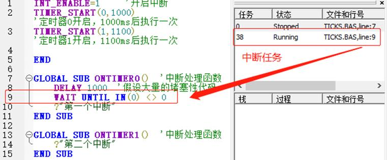
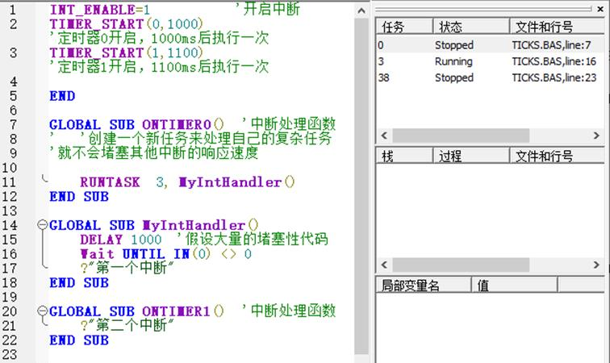

|
类型 |
系统参数 | ||||||
|
描述 |
中断总开关。 为了避免程序没有初始化好进入中断，中断开关缺省是关闭的。
控制器内部只有一个任务在处理所有的中断信号响应，有一个固定的中断任务号，如果中断处理函数过多，并且中断处理函数的代码太长，会造成所有的中断响应变慢，甚至是中断堵塞，影响其他中断执行。 解决办法： (1)尽量减少中断的数量，很多应用都可以用循环扫描来处理。 (2)如果有一个中断处理函数特别长的话，就调用一个单独的任务来处理中断中的复杂任务，这样就不会堵塞其他的中断响应。 | ||||||
|
语法 |
INT_ENABLE = switch
| ||||||
|
适用控制器 |
通用 | ||||||
|
例子 |
错误示范，中断堵塞 如下图，定时器中断0开启，IN(0)为0，导致中断函数堵塞在第9行，由程序无打印结果可得此时定时器中断1无法运行。 
正确示范 若中断需要处理大量代码，在中断内创建一个任务来处理，如下图任务3，执行下面程序，打印出“第二个中断”，定时器中断0堵塞，定时器中断1的运行不受影响。  对应代码如下： INT_ENABLE=1 '开启中断 TIMER_START(0,1000) '定时器0开启，1000ms后执行一次 TIMER_START(1,1100) '定时器1开启，1100ms后执行一次 END
GLOBAL SUB ONTIMER0() '中断处理函数 '创建一个新任务来处理自己的复杂任务，就不会堵塞其他中断的响应速度 RUNTASK 3, MyIntHandler() END SUB
GLOBAL SUB MyIntHandler() DELAY 1000 '假设大量的堵塞性代码 WAIT UNTIL IN(0) <> 0 ?"第一个中断" END SUB
GLOBAL SUB ONTIMER1() '中断处理函数 ?"第二个中断" END SUB | ||||||
|
相关指令 |